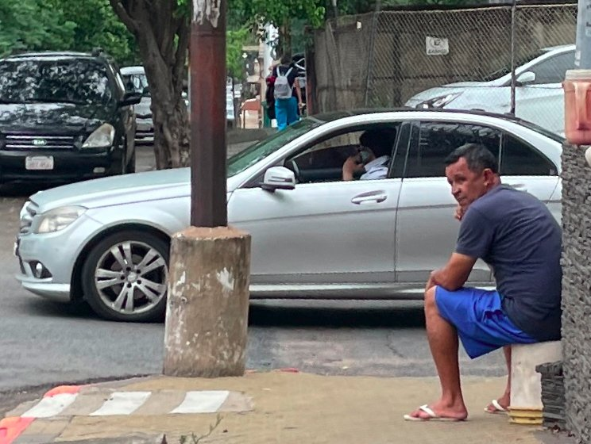

20 The
energy balance
Unprecedented kindness,
integration challenges and
Christmas in the Netherlands

On October 12, 1492, Christopher Columbus discovered America. He arrived in the Bahamas, which is located on the eastern side of America. During his first visit, he left 41 crew members behind in the Dominican Republic to set up a Spanish settlement, find gold and convert the people to Christianity. Columbus himself also brought a number of native people back from the new world, and showed them to the inhabitants of Barcelona. He told the people about the continent that he thought was Asia. At that time, people already knew that the earth was round, but they also thought that the earth was much smaller, so they did not expect that there could be another continent via this new western route. When Columbus returned to Central America for his second voyage, it turned out that all the crew members who had been left behind had been murdered by native peoples. Bloody years followed, because the local population was not always pleased with the often aggressive attitude of the Europeans. Slowly but surely, more and more parts of Central and South America were incorporated and again the colonists encountered a lot of resistance. It was therefore a surprise when the Spanish explorer Juan de Salazar de Espinosa discovered Paraguay in 1537 and to his great surprise he encountered relatively little conflict with the local Guarani tribes who adopted a much softer and friendlier attitude. There were even mestizos born, descendants with a mixture of both cultures.
 The inhabitants of Paraguay still identify with this original tribe, the 'Guarani'. I think I understand what that explorer meant centuries ago with 'that soft and friendlier attitude'. During my first weeks in Paraguay I was helped everywhere, and people did not worry for a second whether they might be late because of that. Where else in the world do you still see that, that people live so much in the moment? In the 11 months that I was allowed to be in Paraguay, I cannot remember seeing anyone looking grumpy. A Bolt taxi driver told me, ‘we don’t have racism here like you see in America’. The norms and values of ‘together with the family’ date back to the pre-colonial era when tribes came together to drink the traditional “thereree”. What also strikes me is that people of all ages often hang out together, perhaps because they often have children at a much younger age here. There doesn’t seem to be a gap between generations. Paraguay, sometimes confused with Uruguay, is not the country with the most tourist attractions, but the people are always positive and appreciate the little things they have. Admirable, because when I walk through the capital of Asuncion, I also see many people living on the streets under appalling hygienic conditions. Pavements are more often loose than fixed and holes in the roads are the fear of every motorist.
The inhabitants of Paraguay still identify with this original tribe, the 'Guarani'. I think I understand what that explorer meant centuries ago with 'that soft and friendlier attitude'. During my first weeks in Paraguay I was helped everywhere, and people did not worry for a second whether they might be late because of that. Where else in the world do you still see that, that people live so much in the moment? In the 11 months that I was allowed to be in Paraguay, I cannot remember seeing anyone looking grumpy. A Bolt taxi driver told me, ‘we don’t have racism here like you see in America’. The norms and values of ‘together with the family’ date back to the pre-colonial era when tribes came together to drink the traditional “thereree”. What also strikes me is that people of all ages often hang out together, perhaps because they often have children at a much younger age here. There doesn’t seem to be a gap between generations. Paraguay, sometimes confused with Uruguay, is not the country with the most tourist attractions, but the people are always positive and appreciate the little things they have. Admirable, because when I walk through the capital of Asuncion, I also see many people living on the streets under appalling hygienic conditions. Pavements are more often loose than fixed and holes in the roads are the fear of every motorist.
Chatting is what people here love to do most, about the heat, the food or football. The urge to keep the conversation going is so ingrained in our DNA that sometimes I get a second or third question fired at me before I've even managed to answer the first. This sometimes makes it difficult for me to venture into public spaces. I'm not always looking forward to making small talk. Sometimes I long for a European chat that sometimes contains a silence. "Hey muchacho, where are you from?" a man shouts across a restaurant while I'm just finishing a bite of steak. "Can I give you as a present?" his wife jokingly calls after him. Sometimes I'm in a good mood and don't mind. And sometimes I find it rather embarrassing. In the gym I don't really know how to behave when I look around and see that I'm the only one who isn't chatting. It almost feels strange to work out in a gym. Should I just start chatting too? You want to adapt to the Paraguayan culture, but of course you also want to stay yourself.
 When I put the key in the door of my apartment on Antequerra Street, passers-by can't seem to believe their eyes "Does he really live here?". Living in the 'center' of Asuncion sounds nice, but people have moved away from the center en masse, which has caused it to fall into disrepair. As soon as I leave the house, I never really feel completely at ease and it's hard to explain why. Every day I experience something bizarre on the street. For example, I saw a dead cat lying on the street twice. A tree fell on a woman. And every street has a car cleaner. Someone you better try to keep as a friend. People try to create confusion in all sorts of ways, for example by suddenly shouting or honking. The first month I was scared stiff. As soon as I walk out my front door, there is often a group of people leaning against the facade. They don't do anything wrong in principle, but you don't really feel comfortable there. As soon as night falls, the neighborhood seems to change into a free state, where people emerge under the influence of narcotics, just like in the series 'The Walking Dead'. Motorists who still have to go out on the street at night often have tinted windows and deliberately drive through red lights because stopping at the intersection can be extremely dangerous. My taxi has a baseball bat ready next to it. Sometimes you can hear the grinder of the neighbor for a whole day or a deafening noise of drums from the gym. I actually don't find it strange at all that I hardly see any tourists. It is a neighborhood where I can live anything but quietly, but fortunately I never have to be on the street for long, because the places I go to I visit during the day and are just a stone's throw away.
When I put the key in the door of my apartment on Antequerra Street, passers-by can't seem to believe their eyes "Does he really live here?". Living in the 'center' of Asuncion sounds nice, but people have moved away from the center en masse, which has caused it to fall into disrepair. As soon as I leave the house, I never really feel completely at ease and it's hard to explain why. Every day I experience something bizarre on the street. For example, I saw a dead cat lying on the street twice. A tree fell on a woman. And every street has a car cleaner. Someone you better try to keep as a friend. People try to create confusion in all sorts of ways, for example by suddenly shouting or honking. The first month I was scared stiff. As soon as I walk out my front door, there is often a group of people leaning against the facade. They don't do anything wrong in principle, but you don't really feel comfortable there. As soon as night falls, the neighborhood seems to change into a free state, where people emerge under the influence of narcotics, just like in the series 'The Walking Dead'. Motorists who still have to go out on the street at night often have tinted windows and deliberately drive through red lights because stopping at the intersection can be extremely dangerous. My taxi has a baseball bat ready next to it. Sometimes you can hear the grinder of the neighbor for a whole day or a deafening noise of drums from the gym. I actually don't find it strange at all that I hardly see any tourists. It is a neighborhood where I can live anything but quietly, but fortunately I never have to be on the street for long, because the places I go to I visit during the day and are just a stone's throw away.
 When cars come towards me, I feel the many eyes on me, which makes me feel like a dummy. So over time I learn the quieter roads that require the least energy to get from A to B. Quickly crossing the road when a homeless person is lying there, so that I don't stand out so much. A kind of undercover agent on a secret mission. It works, although it is of course a crazy way to get through your day. Busy places like the main street 'La Palma' or "mercado 4" cost me so much energy to visit them that I always have to lie down on the bed afterwards to recover.
When cars come towards me, I feel the many eyes on me, which makes me feel like a dummy. So over time I learn the quieter roads that require the least energy to get from A to B. Quickly crossing the road when a homeless person is lying there, so that I don't stand out so much. A kind of undercover agent on a secret mission. It works, although it is of course a crazy way to get through your day. Busy places like the main street 'La Palma' or "mercado 4" cost me so much energy to visit them that I always have to lie down on the bed afterwards to recover.
 At the La Cofi office, I see that I face similar challenges. Programming requires a lot of focus, which makes it very difficult to concentrate when the staff next to you spend a large part of the day chatting with each other. They put on some music and call with their phone on the speaker. It was very kind of them to offer me a separate office space in the back as a solution, from where I was able to work much better. Still, it remains special that I even had to work with earplugs in there regularly because the handyman happened to have to repair something, and he was called again, and because the cleaning lady also happened to come by with a lot of fanfare. Well, taking the noise into account, people here in Paraguay don't seem to find that important.
At the La Cofi office, I see that I face similar challenges. Programming requires a lot of focus, which makes it very difficult to concentrate when the staff next to you spend a large part of the day chatting with each other. They put on some music and call with their phone on the speaker. It was very kind of them to offer me a separate office space in the back as a solution, from where I was able to work much better. Still, it remains special that I even had to work with earplugs in there regularly because the handyman happened to have to repair something, and he was called again, and because the cleaning lady also happened to come by with a lot of fanfare. Well, taking the noise into account, people here in Paraguay don't seem to find that important.
In the places where I have been more often, people are getting more used to my presence. Take Salsaschool Soul for example, where I notice that dancing removes a large part of the cultural barrier, which means that I can finally show more of myself. We are working towards a Bachata performance in December in a large theatre where I will participate in four performances. Also the other places I go to every week like the library where a very friendly man Alberto works, at the market at Zuny's eatery, and at the neighbor Sandra I notice that I am a bit more at ease and then I can also experience what incredibly warm people there are in Asuncion.
The people I meet are often so passionate that I am sometimes immediately invited to go on vacation with them or to visit their village of origin. I can no longer keep up on it on my mobile. It was my birthday and finally, after 4 months, there was a nice spontaneous evening with some people from the dance school. The next day I immediately received messages from another group: "You go for a drink with them, but never with us." Even with the best intentions, sometimes it seems like everything I do is put under a magnifying glass and that can be quite tiring.
 In retrospect, I was still quite active the first few months in Asuncion. On Wednesdays and Saturdays I visited salsa parties, I went outside, to all kinds of coffee shops and a family took me in their arms to show me their country. Of course, I had to adjust my expectations a bit, because a mountain here in Paraguay is of course not a Peruvian Machu Picchu, but of course I had not come here for the most beautiful Instagram photos. The reason for settling here in Paraguay for a while was because I wanted to live a more stable and quiet life, because I had already had such a busy travel period. It was therefore quite difficult that every time I had been somewhere, people said: “Jorrit, in the time that we have seen you, we have already seen each other 4 times” or “You seem so lonely and closed, you should enjoy yourself more”, because myself I didn't experience it that way at all and sometimes you go home with a feeling that your presence is never enough. What difference would it make to me if someone who comes to the Netherlands goes out every weekend or lives a more quiet life.
In retrospect, I was still quite active the first few months in Asuncion. On Wednesdays and Saturdays I visited salsa parties, I went outside, to all kinds of coffee shops and a family took me in their arms to show me their country. Of course, I had to adjust my expectations a bit, because a mountain here in Paraguay is of course not a Peruvian Machu Picchu, but of course I had not come here for the most beautiful Instagram photos. The reason for settling here in Paraguay for a while was because I wanted to live a more stable and quiet life, because I had already had such a busy travel period. It was therefore quite difficult that every time I had been somewhere, people said: “Jorrit, in the time that we have seen you, we have already seen each other 4 times” or “You seem so lonely and closed, you should enjoy yourself more”, because myself I didn't experience it that way at all and sometimes you go home with a feeling that your presence is never enough. What difference would it make to me if someone who comes to the Netherlands goes out every weekend or lives a more quiet life.
 The fatigue of walking on the streets and the social pressure piled up so much that I decided to stop the salsa parties, changed to a quieter market, started exercising more at home and started wearing sunglasses on the street. I found it all a shame to have to do all that, although I did notice very quickly that I got through the days more relaxed. I also learned smart tricks, such as not saying ‘Holla’ to the taxi driver but the more formal ‘Buenas dias Senor’. Words like ‘air conditioning’ or ‘Nike’ could give the wrong signal when I said it, just like when I paid with a big bill. That’s why I never introduced myself as a programmer but always said that I maintained a website. Once I met a lady in Perth, Australia who always said she was from Canada while she was actually from America. It’s not at all strange to pretend to be something else when you’re traveling if it’s received more positively.
The fatigue of walking on the streets and the social pressure piled up so much that I decided to stop the salsa parties, changed to a quieter market, started exercising more at home and started wearing sunglasses on the street. I found it all a shame to have to do all that, although I did notice very quickly that I got through the days more relaxed. I also learned smart tricks, such as not saying ‘Holla’ to the taxi driver but the more formal ‘Buenas dias Senor’. Words like ‘air conditioning’ or ‘Nike’ could give the wrong signal when I said it, just like when I paid with a big bill. That’s why I never introduced myself as a programmer but always said that I maintained a website. Once I met a lady in Perth, Australia who always said she was from Canada while she was actually from America. It’s not at all strange to pretend to be something else when you’re traveling if it’s received more positively.
 The integration may not have gone completely smoothly, but in the last few months I had more time for my new job at Bittensor. Starting out with this is quite tough because the work continues 24 hours a day and your performance is constantly compared to that of other programmers, often with much more experience. So the first few months were mainly a struggle without being rewarded for it. I remember a week when there were problems on Monday and I had to cancel everything until I got everything working again on Thursday. Luckily I learned a lot from it to prevent that in the future. It's nice that I work with people on Bittensor who are just as motivated as I am.
The integration may not have gone completely smoothly, but in the last few months I had more time for my new job at Bittensor. Starting out with this is quite tough because the work continues 24 hours a day and your performance is constantly compared to that of other programmers, often with much more experience. So the first few months were mainly a struggle without being rewarded for it. I remember a week when there were problems on Monday and I had to cancel everything until I got everything working again on Thursday. Luckily I learned a lot from it to prevent that in the future. It's nice that I work with people on Bittensor who are just as motivated as I am.
In Latin America, people often say the socially desirable thing. 'Paraguay is my favorite country!' I say that too, of course. But of course I didn't start writing this blog just to report that everything is great, but to tell how I really experienced it. And Paraguay may not have been exactly what I expected after all. Now that the pillars of Bittensor are standing, there will gradually be more time for a better balance. So there is still a nice dessert waiting for you. But first, back to the familiar surroundings of Bavel in The Netherlands for a while. After 1.5 years, finally reunited with family together at the Christmas table. I am really looking forward to it. Everyone have a wonderful New Year's Eve and I hope you will visit the website again in 2025.